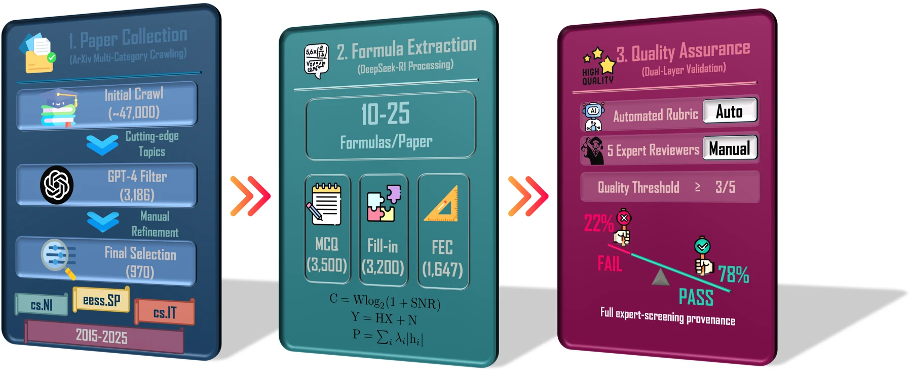

WirelessMathBench-XL: An Auditable Benchmark for Wireless Mathematical Reasoning
4,027 problems drawn from 836 arXiv papers across 20 wireless subfields, each carrying its own text-overlap evidence against public pretraining data, so a score can be audited rather than trusted.